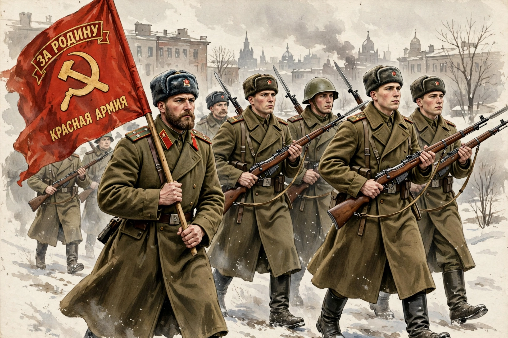

| Workers' and Peasants' Red Army | |
|---|---|
| Active | 1918–1946 |
| Country | Russian SFSR; Soviet Union |
| Type | Army |
| Role | Land warfare |
| Engagements | Russian Civil War; Polish–Soviet War; Winter War; Second World War |
The Workers' and Peasants' Red Army, often shortened to the Red Army, was the army and air force of the Russian Soviet Federative Socialist Republic and, after 1922, of the Soviet Union. It was established in January 1918 by decree of the Council of People's Commissars, with Leon Trotsky as its first People's Commissar for Military Affairs, to defend the new Bolshevik state during the Russian Civil War.
Built from Red Guards, former Imperial Army soldiers and mass conscription, the Red Army defeated the White armies by 1922. It was reorganised in the interwar years, purged of much of its senior officer corps during the Great Purge of 1937–38, and performed poorly in the Winter War against Finland before achieving decisive victory over Nazi Germany in the Eastern Front of the Second World War, capturing Berlin in May 1945. In 1946 it was renamed the Soviet Army.
The army was controlled by the Revolutionary Military Council and organised into fronts, armies, corps, divisions and regiments. Political commissars initially shared command authority with officers; a single-command system was restored during the Second World War, along with traditional ranks and insignia in 1943.
The Red Army remains central to Russian and post-Soviet memory of the Great Patriotic War, commemorated in monuments, parades on Victory Day (9 May) and an extensive literature.